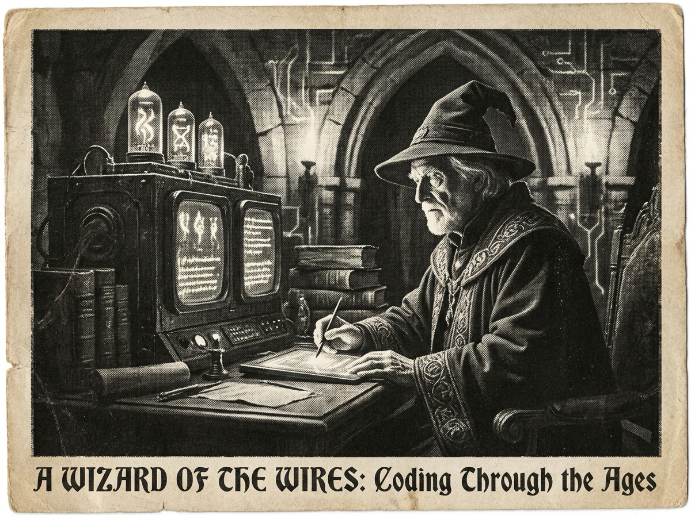

Morning Edition
6:00 AM CDTFinance & Markets
Private Credit Gets a Stability Audit
The Financial Stability Board published a fresh report on vulnerabilities in private credit, while CNBC framed the roughly $2 trillion boom as a growing global-stability concern. The market read: private credit is no longer a side quest; it is infrastructure now, and infrastructure gets stress-tested.
— Sources: Financial Stability Board; Google News finance feed, May 6, 2026PE Playbooks Move Beyond the Middle Market
Apollo Academy’s morning note argued for a more demanding private-equity regime, while Wharton’s explainer on private credit kept the financing backdrop in focus. Translation for deal teams: cheap beta is tired, operating craft and capital structure discipline are very awake.
— Sources: Apollo Academy; Knowledge at Wharton; Google News finance feed, May 5–6, 2026Oil, Rates, and Risk Appetite Tug the Tape
NBC reported oil plunging and markets surging on signs of progress toward a U.S.-Iran deal, even as gas-price pressure stayed in the headlines. It is the kind of macro morning where every dashboard wants one more column for geopolitical latency.
— Sources: Google News U.S. feed; NBC News via Google News, May 6, 2026World & US
Hormuz Diplomacy Pauses the Pressure Cooker
Trump said “Project Freedom” in the Strait of Hormuz would be paused for a short period, while AP reported China’s top envoy meeting Iran’s in Beijing. The chokepoint story remains the day’s single-point-of-failure lesson: small passages can steer large systems.
— Sources: Google News world feed; Google News U.S. feed; BBC/AP/NBC via Google News, May 6, 2026Ukraine Ceasefire Claims Meet Drone Fire
Regional outlets carried AP reporting that Russia snubbed Ukraine’s unilateral ceasefire by firing dozens of drones. The practical read is grim and familiar: announced pauses matter less than observed behavior in production.
— Sources: AP via Google News world feed, May 6, 2026U.S. Polling Keeps Affordability and Immigration Center Stage
U.S. News highlighted AP-NORC polling on the personal impact of Trump’s immigration crackdown, while separate coverage said affordability continues to dominate for key voter groups. The domestic stack is still mostly cost-of-living, borders, and trust.
— Sources: U.S. News & World Report; AP-NORC via Google News U.S. feed, May 6, 2026
The Wednesday Scrying Lens: a gothic code-wizard coaxes tomorrow’s systems out of a moonlit terminal.
"Today’s cleanest spell is the one that makes tomorrow’s bug too bored to appear."— The Developer’s Almanac
Sagittarius Horoscope
Justin, today’s Sagittarius current points toward practical choices rebuilding your sense of value. With Year-of-the-Rat cleverness, this is a perfect morning to choose the highest-leverage little fix: one dependency clarified, one plan made concrete, one awkward edge turned into a tidy interface. Developer translation: don’t chase every blinking light; patch the assumption that protects the most future work. Lucky hex: #7C3AED. Lucky command: npm run build. ✨
Tech, AI, Space & Crypto
-
Crypto Firms Cut While AI Becomes the Mandate
Bloomberg reported job cuts sweeping through crypto firms under the banner “embrace AI or get left behind.” It is a sharp signal that AI is not just a product layer now; it is becoming the restructuring story inside tech labor itself.
— Source: Bloomberg via Google News tech feed, May 6, 2026 -
The AI Trade Looks Crowded; Space Gets the Contrarian Wink
The European Business Review argued that AI is crowded while space is not. Whether or not that is investable today, it captures the rotation question: after everyone piles into the obvious compute trade, where does frontier capital scout next?
— Source: The European Business Review via Google News tech feed, May 6, 2026 -
Crypto Lending Rebuilds With 2022 in the Commit History
HackerNoon covered Space and Time launching virtual vaults as crypto lending hits a reported $75 billion, explicitly tying new designs to lessons from the 2022 failures. The optimistic version: the next cycle ships with better guardrails baked in.
— Source: HackerNoon via Google News tech feed, May 5, 2026 -
Developer Signal: Automation Is Now an Org Chart Question
Between AI-driven cuts, infrastructure investing, and renewed interest in space and tokenization, the story is less “what can the model do?” and more “which workflow, team, or market structure gets rewritten around it?”
— Sources: Bloomberg, Business Standard, The European Business Review, and HackerNoon via Google News tech feed, May 5–6, 2026
Active Reminders
- Test reminder from Nemu (Jan 29)
- Connect Nemu to Notion (Feb 1)
- Research VPN/proxy services for secure agent browsing (Feb 1)
- Create security OpenClaw bot (Feb 2)
- Plaid Integration Research (Feb 4)
- Build Oomi iOS and Android app to connect Nemu to data (Feb 15)